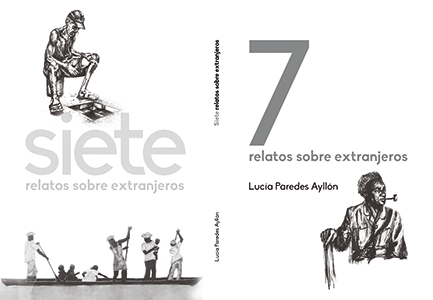
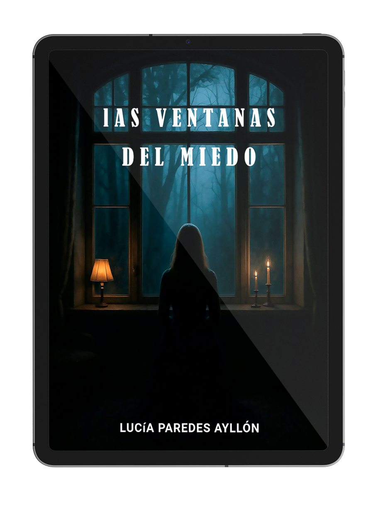

Lucía Paredes
LUCÍA PAREDES AYLLÓN nacida en Bolivia, se formó en Derecho y Ciencias Políticas en la Universidad Mayor de San Andrés. Actualmente ejerce como abogada en España, dedicada a la defensa jurídica de personas inmigrantes.
Amante del género policiaco, en su primera obra se adentra en uno de los rostros más oscuros de nuestros tiempo. A través de una trama intensa y perturbadora, denuncia la persistencia de nuevas formas de esclavitud que muchos creían desaparecidas:redes de explotació, violencia y control que convierten a las personas en mercancía. Un relato duro y necesario que busca sacudir consencias y revelar una realidad que con demasiada frecuencia permanece oculta.
En su libro sobre la inmigración, se acerca a las vidas de quienes se ven obligados a abandonar su lugar en busca de una oprotunnidad. Con una mirada humana y cercana, retrata el desarraigo, la incertitumbre y la esperanza de quienes cruzan fronteras físicas y emocionales para intentar construir un futuro digno.
En sus historias de terror, la autora se adentra en las zonas más oscuras de la mente humana. El miedo, los sentimientos que se deforman y las obsesiones que crecen hasta rozar lo patológico dan forma a relatos inquietantes. A través del terror psicológico y visiones distópicas del futuro, estas historias invitan a enfrentarse a los temores más profundos y a las consecuencias de las acciones humanas.
Tres unisversos distintos - la explotación, la migración y el terror - unidos por una misma intención: invitar al lector a dentenerse, reflexionar y mirar de frente realidades, con demasiada frecuncia, preferimos ignorar.
MIS LIBROS
UN CABALLO BLANCO SIN NOMBRE
Descubre la historia detrás de esta obra en su presentación oficial.

7 RELATOS PARA EXTRANJEROS
Explora las pérdidas y el duelo que acompaña a los inmigrantes

LAS VENTANAS DEL MIEDO
Un libro de terror psicológico que explora lo más profundo del alma